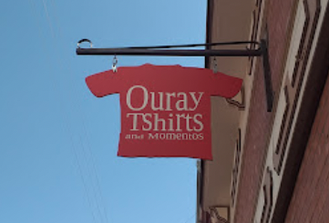
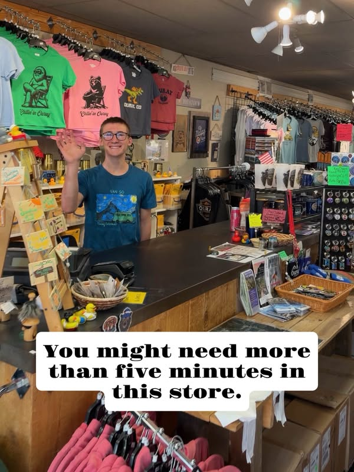

A LITTLE CONTEXT, BEFORE YOU BROWSE
A concept
to react to.
This is an independent, mobile-first website preview prepared to start a conversation with Ouray T-Shirts and Momentos. It is not an official store website.
Public information referenced
- Ouray T-Shirts and Momentos on Facebook — public description, current business photos, and the invitation to take a photo by the window, tag the shop and ask for a sticker.
- Visit Ouray — Shop directory — shop category description, listed address and phone.
- A direct reply from the shop described it as brick-and-mortar, with Facebook and Instagram as its main online channels, tourist foot traffic as its main source of sales, and shipping during winter months. Shipping terms, specific hours and official Instagram handle are not confirmed here.
Photo credit & usage


Images are shown here to make the concept concrete. A public post or directory listing does not itself grant republication rights. Obtain the shop's approval for these photos before adopting or promoting the website publicly as its official site. The manager offered to share selected product photos; those can replace or supplement these images after they are received.
Factual limits
- No live inventory, product-level catalog, prices, sizes or checkout are represented.
- “Graphic T-shirts,” warm layers, accessories and gifts are broad categories based on the shop's public description and public photos, not a claim about current stock.
- Winter shipping was stated by the shop; destinations, cost, dates and ordering process still need confirmation.
- Address 610 Main St and phone +1 970-325-9868 are listed by Visit Ouray. Verify with the shop; other directories show address variations.
- Hours, shop history, staff names and official Instagram handle have not been invented or included.
Suggested next step
Ask the manager for approval, current hours, an official Instagram link and a small set of photos they would like featured. Then update this preview around their feedback.
Return to visit information